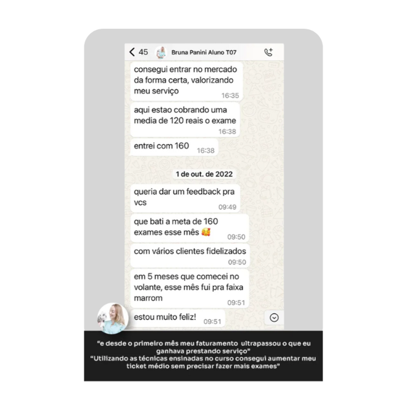
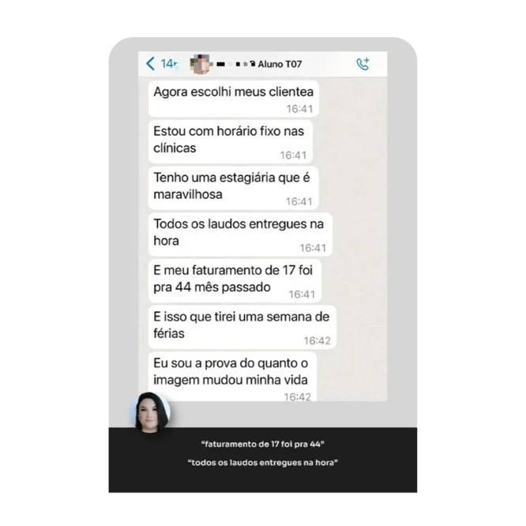
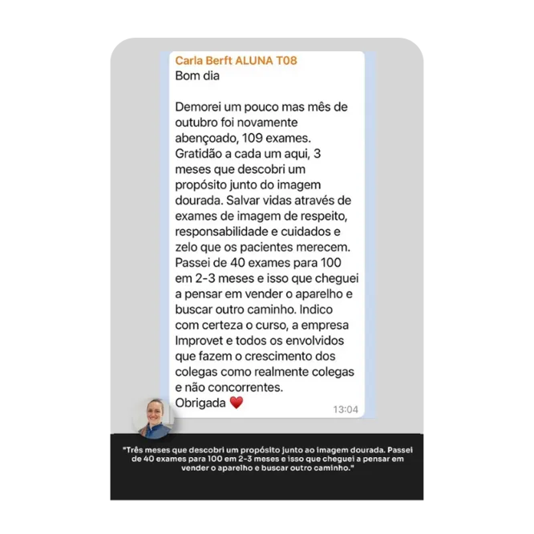
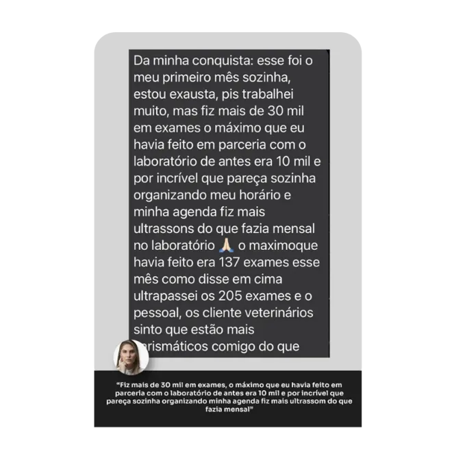
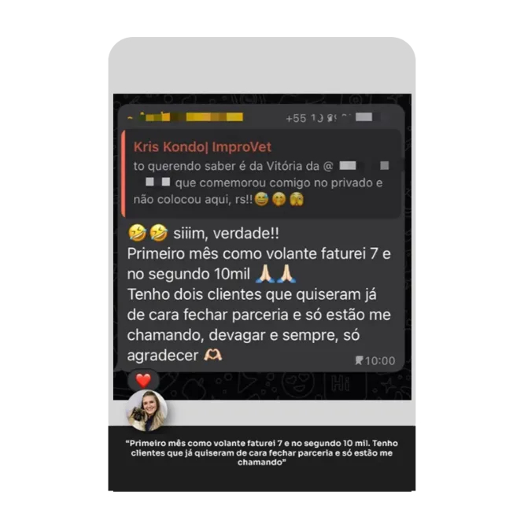
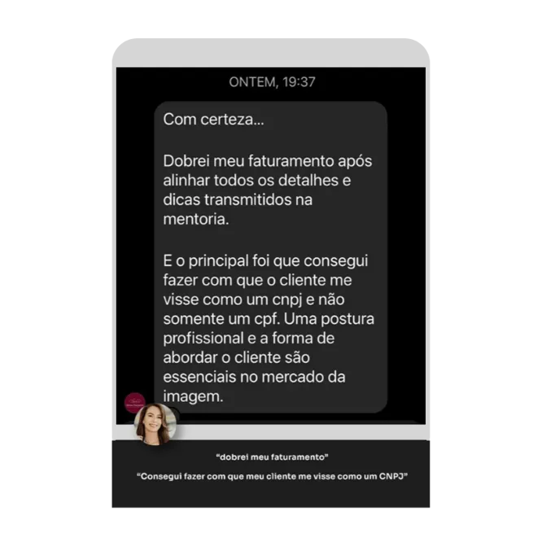
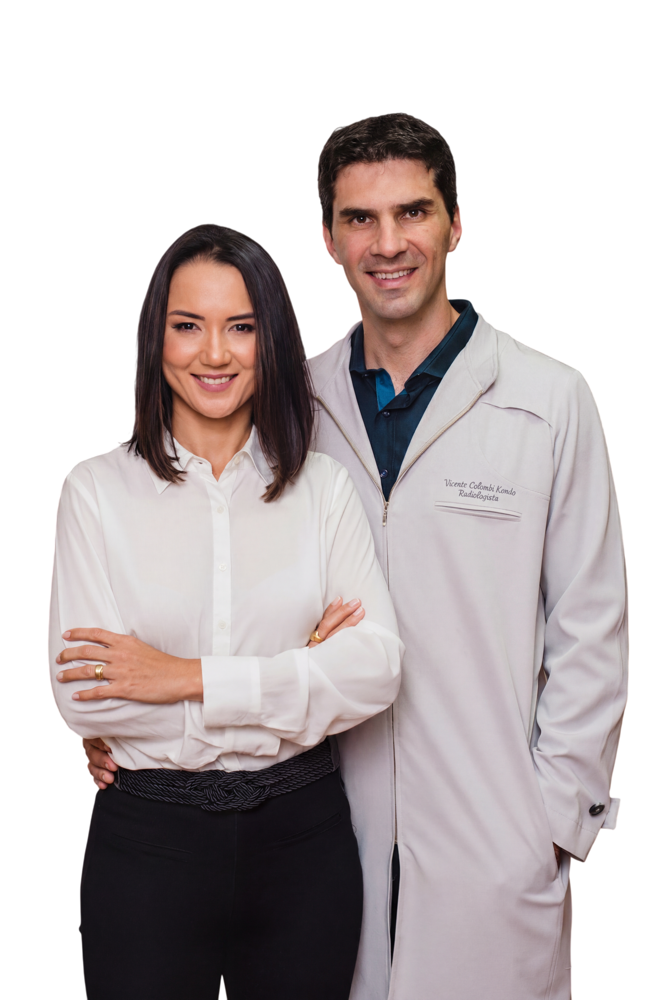

Faz dezenas de exames por mês e ainda passa a madrugada laudando. Não tenho tempo nem pra almoçar.
Em 40 minutos de reunião, vamos mapear o que está travando seu crescimento e desenhar seu próximo passo. Análise gratuita, conduzida pela única Escola de Negócios para veterinários especialistas do Brasil.
Quero meu diagnóstico gratuitoFaz dezenas de exames por mês e ainda passa a madrugada laudando. Não tenho tempo nem pra almoçar.
Tem medo de ajustar o preço e perder o cliente pro colega que cobra metade.
Vê profissionais menos capacitados sendo reconhecidos. Não consigo entender onde estou errando.
Vive de indicação. Se as parcerias caírem, minha renda some no mês seguinte.
Quer estar mais com a família, mas se diminuir o ritmo, o faturamento desaba.
Se sente esgotado e às vezes pensa em abandonar a profissão. Não era isso que eu sonhava quando me formei.
Uma análise estratégica conduzida pessoalmente pela nossa equipe. Você não recebe um pacote pronto, recebe um caminho desenhado pra sua realidade.
Vamos entender exatamente em qual momento da sua carreira você está hoje: começando, crescendo ou sobrecarregado pelo próprio crescimento.
Vamos mapear o que está dificultando sua evolução no diagnóstico por imagem: agenda vazia, dificuldade de se tornar referência para as clínicas, baixa valorização, falta de equipe, ausência de processos ou desorganização financeira.
A partir do diagnóstico, vamos construir um caminho mais organizado, valorizado e sustentável para seu crescimento no diagnóstico por imagem, dos primeiros clientes à expansão.
Mensagens reais de alunos que aplicaram o método e transformaram suas carreiras. Sem edição, sem ator, sem promessa vazia.







Um casal de veterinários com o mesmo sonho: provar que dá pra ser valorizado, ter qualidade de vida e estabilidade financeira na medicina veterinária.
Em 2019 fundamos a Improvet, a única Escola de Negócios para veterinários especialistas do Brasil. Desde então, mais de 1.157 profissionais passaram pelo nosso Método AEF — Atrair, Encantar, Fidelizar.